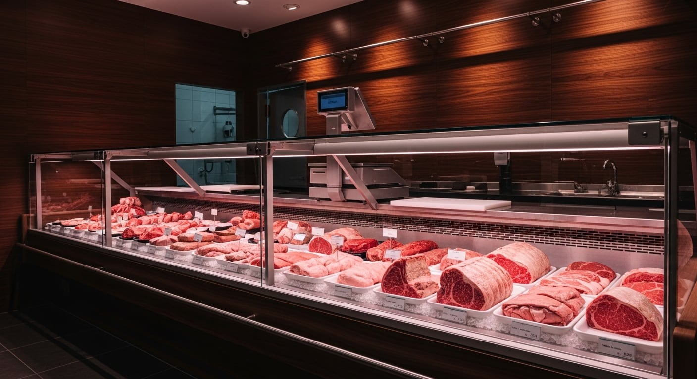
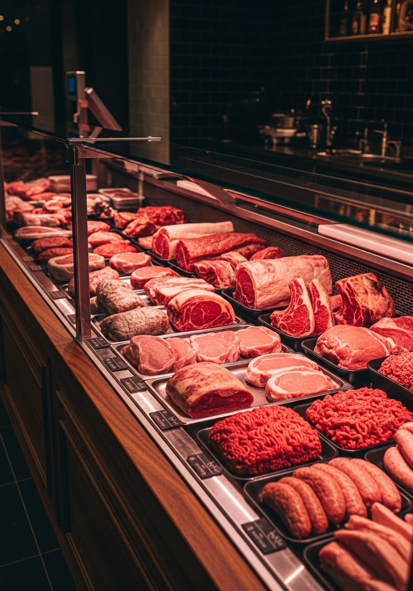
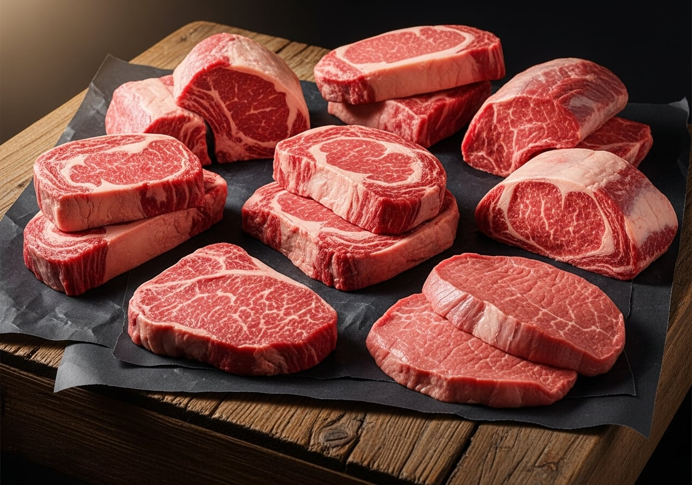
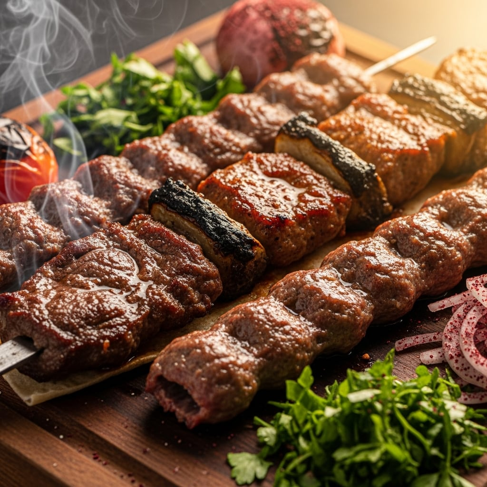

Tiranë · që nga 1930
Mish që e njeh mirë.
Mishtore familjare në Tiranë që nga viti 1930. Mish bio nga malet e Kukësit dhe Hasit, i prerë çdo ditë me dorë, nga tri breza kasapësh.

Tri breza
pas të njëjtit banak
Kakeli nuk është një emër i ri. Dera e parë u hap në vitin 1930, dhe që atëherë mishi pritet me dorë, çdo ditë, nga babai te djali. Ajo që dini të prisni nga ne nuk ka ndryshuar: mish i pastër, prerje e saktë dhe një fjalë e mirë kur hyni brenda.
Mishin e marrim nga malet e Kukësit dhe të Hasit, ku bagëtia rritet në kullota e jo në kafshatë. Kjo lidhje me malin është arsyeja pse klientët tanë e dallojnë shijen që në kafshatën e parë.
Çfarë gjeni në banak
Mish i freskët dhe i përpunuar në dyqan, i zgjedhur copë për copë.
-
01
Mish vici
Copë të zgjedhura vici, prerë sipas gatimit që keni në mendje.
-
02
Mish qengji
Qengj mali nga Kukësi e Hasi, i njomë dhe me shije të plotë.
-
03
Mish dhie
Dhi e rritur në kullota, e kërkuar për pjekje dhe gjellë tradicionale.
-
04
Sallam & të tymosura
Të tymosura dhe sallame të punuara me recetën e shtëpisë.
-
05
Qebap & qofte
Qebap dhe qofte të përgatitura çdo ditë, gati për skarë.
-
06
Mish i grirë
I grirë para syve tuaj, nga copa që e zgjidhni vetë.
I prerë me dorë,
jo me makinë
Çdo copë kalon nga thika, jo nga shiriti i makinës. Kjo do të thotë prerje që respekton fijen e mishit, pa dëmtim dhe pa mbeturina. Na thoni si do ta gatuani dhe e marrim që andej: për tavë, për skarë, për zierje ose për fërgesë.
- Prerje sipas gatimit
- Pa shtesa, pa ngjyrosje
- Pastrim e heqje dhjami sipas kërkesës

Nga banaku jonë

Kaloni nga
dyqani
Na gjeni në Komunën e Parisit. Hyni, shikoni mishin nga afër dhe merrni atë që ju duhet, prerë siç e doni. Për porosi të mëdha ose pyetje, na merrni në telefon.